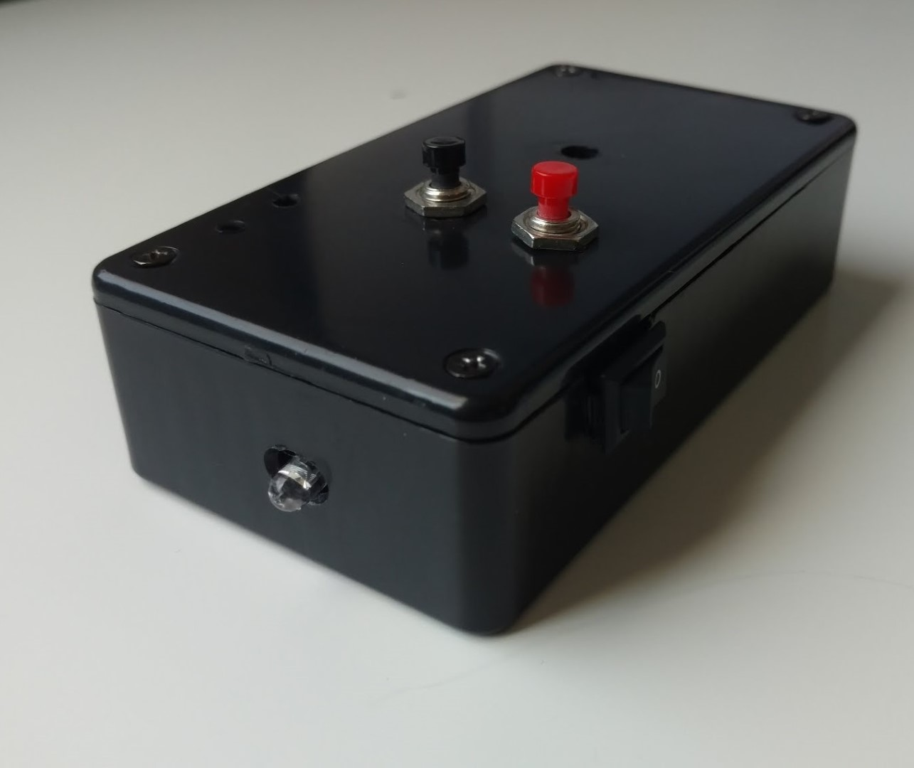

IR Remote Recorder
Last updated {{ page.updated }}
|
Overview This little device can record any IR remote command and play it back. It's like a normal TV remote that only has one function! (not super useful I know...) I guess it is pretty fun to mess with people by randomly using it while they're watching TV.
To use it, you press the red button to start recording a command. The red light will come on to indicate recording has started. Then point the remote you want to record into the little hole in the front and press the button on the remote that you want to record. The red light will automatically turn off when the command has been successfully recorded. Then you can press the black button to play that command back. Pretty simple.
The box is powered by a 9 volt battery and uses an IR receiver and IR LED from sparkfun as well as a PIC microcontroller for the brain. All of the PIC code that I wrote for this is attached below if you're interested in taking a look.
Download Code |
 |
|
|
More Pictures
|
||